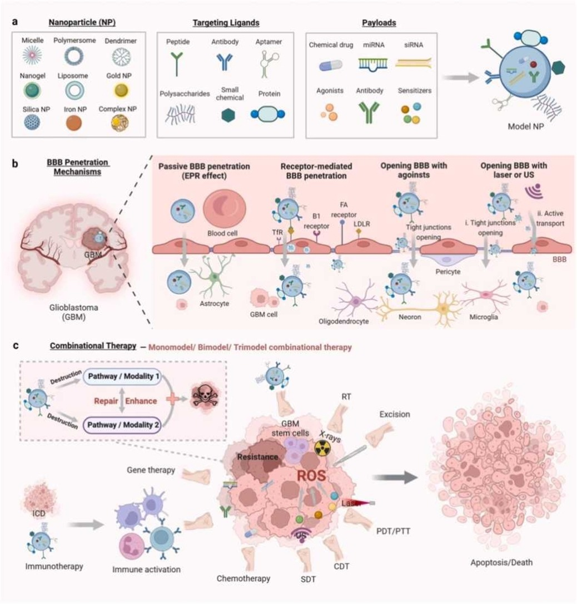

Featured publications

Advanced Science · 2026
Droplet Digital CRISPR for Nucleic Acid Detection
Read publication ↗
Advanced Healthcare Materials · 2026
High-Throughput Generation of Tumor Spheroids via Droplet Microfluidics
Read publication ↗
Nano Today · 2024
Blood-Brain Barrier Penetrating Nanosystems Enable Synergistic Therapy of Glioblastoma
Read publication ↗Complete record